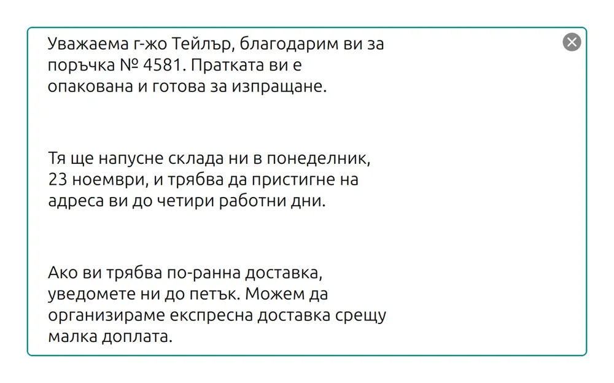
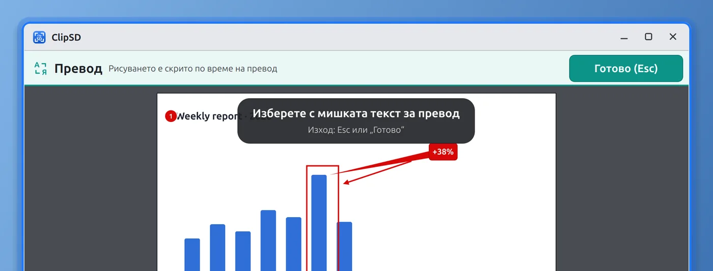

История на версиите
Версия 1.31.0
излезе на
- ClipSD вече е на 12 езика: руски, английски, български, украински, немски, френски, испански, италиански, португалски, полски, турски и китайски. Езикът се сменя веднага, без рестарт: менюто на иконата до часовника, глобусът в редактора, първата стъпка от запознаването или настройките.

- Нов панел в прозореца за избор на област: горе снимка на целия екран, запис на видео, копиране на текст и превод, долу „Редактирай“, „Запази“ и „Копирай и затвори“.

- Превод парче по парче: очертайте участък и преводът ще се появи върху текста; очертайте следващия и той също ще бъде преведен. Esc завършва режима.

- Режимите на редактора „Копиране на текст“, „Изрязване“ и „Превод“ се показват в лента горе с голям бутон за изход; Esc връща предишния инструмент.

- ClipSD се актуализира сам. Веднъж на ден проверява дали има нова версия и предлага „Актуализирай“, „По-късно“ или „Пропусни тази версия“. Проверка веднага: менюто на иконата, „Провери за актуализации“. Актуализацията се проверява с цифров подпис; ако новата версия не се стартира, се връща предишната.